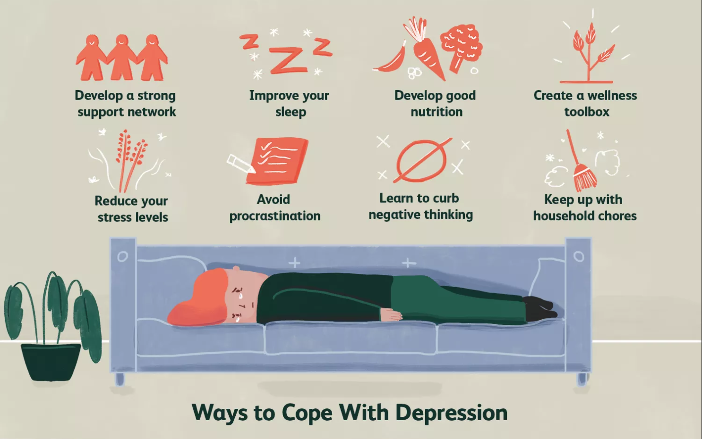

Symptoms
> Feelings of sadness
> Hopelessness/tearfulness
> pessimism believe that the worst will happen
> Insomnia (inability to sleep) or sleeping too much
> Low energy and fatigue without any reasons so even small tasks take extra effort which leads to lack of productivity
> Low self esteem and feeling worthless or guilty so this person start blaming himself for things that he's not responsable for
> Social isolation is on the causes of suicide, a person who struggle with depression prefer to stay away from people even
his family and it's important socially, emotionally and psychologically to have friends and family to count on
> Suffer from overthinking which can affects negatively your carrying capacity
> loss of appetite or overeating
Causes
Substance addiction including drugs, alcohol, gambling:
people who abuse substance are more likely to suffer from depression and substances like alcohol
which is a depressant, it can increase feelings of sadness or fatigue and this is a major driver of depression.
Family History:
if you have a family history of depression or another mood disorder you're at a higher risk for developping depression.
Social Media:
Social media platforms don't reflect reality, your favorites influencers don't show you the background of the image,comparing
you life to other's life makes your situation very hard and complicated than before and this comparison can be a major
driver of depression .
Personality disorders:
people with low-self-esteem, who are easily overwhelmed by stress or pessimistic appear to be more likely to experience
depression .
Effects
Abuse drugs:
people who are depressed may drink or abuse drugs to lift their mood or escape from feelings
Trouble with memory or decisions:
difficulties with making descisions or remembering things and concentrating are very common especially in older adults with
depression like alzheimer.
irritabilty and mood swings
Thoughts of suicide
just to escape from this painful feelings
cognitive abilities disorder:
such as thinking or talking more slowly Depression is technically a mental disorder, but also affects your physical health and well-being
Risk of heart attack:
people who are depressed are more likely to die following a heart attack.
how to cope with depression ?
Get up and treat yourself as someone worthy of love and care everyday, whether you feel like it or not. Wanting to do it had nothing to do with it.
Somedays it’s gonna be more difficult than others so here some tips to help you:

Stay in touch :
keep a social relation can help, that you you can count on someone else.
In the main time, don't wait nothing from any one the only person
you can truly count on it's yourself and stay away from negative people.
your fears :
Don't let your negatives toughts control you or tell you can't do it.
Go and face it.Some people can lose their confidence in going out, driving or travelling.
If you are going throw this days, facing up to these situations will help them become easier.
Don't abuse substances :
In some case, substance can increase the feel of sadness or anxiety
or in others, the subtnance is used to hide emotions and avoid it.
Alcohol, drugs and others addiction it's not the solution.
Try to eat a healthy diet :
Eating more or eating less it's like the addiction it's not the solution,
it can comfort you but it's doing you more harm than benefit.
By time, you'll be on underweight or on excessweight that can cause you a physical illness.
Improve Your Sleep Hygiene :
Sleep and mood are intimately related. A 2014 study found that 80% of people with major
depressive disorder experience sleep disturbances . But, you might feel like you just can't fall asleep.
Or perhaps you struggle to get out of bed because you feel exhausted all the time. Good sleep hygiene could
be key to improving the quality and quantity of your sleep.Turn off electronics at least an hour before you go to bed.
Use dim light to read a book or engage in another relaxing activity.
Reduce stress
When you're under stress, your body produces more of a hormone called cortisol. In the short-term,
this is a good thing because it helps you get up to cope with whatever is causing the stress in your life.
Over the long run, however, it can cause many problems for you like increasing depression
Beat procrastination
Putting things off fuels depression. It can lead to increased guilt, worry, and stress.
Try to do things you should do before things you want to do. Let the pleasures be a reward.
be more active
Take up some form of exercise. There's evidence that exercise can help lift your mood
to learn more about ativities ( exercise and more ) see the next section.
Activities
Exercises :
if you have the chance to go outside you can take a walk, biking, riding or swiming.
Specially, with a supportive group, it can be more fun. Don't be sad if you have to stay at home,
such you can do some yoga, meditation or even dance like a crazy one.
learn new thing :
you can began a new project that you've been avoiding for a long time.
learn some new language,skills or more ...
keep your mind busy help you not to thinik about the negative side and
the achievement you release make you proud of yourself.
social :
GO outside and find new friend in a club, party,...
invite some friends, do with them some activities,
stand a routine :
creating a habit can help with the sleep issues and diet routine
welness tools box :
it's box where you write all the activities that make you happy.
In the low down day, you take one of the paper and you do what you write on it.
professionnels advice from our therapists :
Before anything, you should know that Depression is a medical condition, not a personal
failing, and nothing to be ashamed of. See a doctor! And keep working with the doctor until
you find the right treatment for you. It usually takes several tries, over months to find the right one.
That is normal and that is okay
Medical treatments for depression
The main medical treatment for depression is antidepressant medication. There's a lot of misinformation
about antidepressant medication and while there is no simple explanation as to how it works, it can be very useful
in the treatment of moderate to severe depression and some anxiety disorders.
If you're experiencing moderate to severe depression your doctor may prescribe antidepressant medication,
along with psychological treatments. Antidepressants are sometimes prescribed when other treatments have
not been successful or when psychological treatments aren't possible due to the severity of the condition or a lack of access to the treatment.
People with more severe forms of depression (bipolar disorder and psychosis) generally need to be treated with medication.
This may include one or a combination of mood stabilisers, anti-psychotic drugs and antidepressants.
which antidepressant you should use ?
Making a decision about which antidepressant is best for each individual can be complex. The decision is made in consultation with your doctor,
after careful assessment and consideration. You can help your doctor's assessment by providing as much information as possible
about yourself and your medical history. Important factors include your age, symptoms, other medications and, if female, whether you are pregnant
or breastfeeding.There are many different types of antidepressant medication which have been shown to work,
but their effectiveness differs from person to person. Antidepressants take at least two weeks before they start to help,
and it may also take some time for the doctor to find the most suitable medication and dosage.
for that you can consulte one of our therapist. Contact doctors
side effests of Antidepressants :
Antidepressants can make you feel better, but they won't change your personality or make you feel happy all the time.
Like taking any other medication, some people will experience some side effects, and individuals should discuss the risks and
benefits with their doctor. People should also ask for information about the medications so that they can make an informed decision.
Depending on which medication is taken, common side effects can include nausea, headaches, anxiety, sweating, dizziness, agitation,
weight gain, dry mouth and sexual difficulties (e.g. difficulty becoming/staying aroused). Some of these symptoms can be short-lived,
but people who experience any of these symptoms should tell their doctor, as there are ways of minimising them. The likelihood of a particular
side effect happening varies between individuals and medications. It is not uncommon for people with depression to have suicidal thoughts.
Treating the depression effectively will reduce the likelihood of a person hurting him or herself. In the period of time between the person
starting antidepressant medication and responding to treatment – which can be more than two weeks – the person should still be monitored closely
by the doctor and his or her progress reviewed, as the risk of suicidal behaviour may even be slightly increased, especially in young people.
how to help someone with depression ?
your role as a friend or family member is very important in the therapy of the loved one.
you can as help him as distract him what you tell, what you do even what you makes him feel is very important.
so:
Don't be critical :
it can be hard sometimes to understand the feelings of the other like crying without a reason
so if you can't be helpful just be an ear that can listen not just hear him.
Don't blame him :
be careful about what you are saying don't be so judge
or don't say something like 'you are so ... '
keep in touch :
don't wait from him to tell you let's go outside make him do some new thing
sometimes in you have you can force him but not a lot go at his rythm.
the main think it's not to let him down, a message can be a big thing for him.
support them :
that's the main role you have to do. we think it goes without saying.